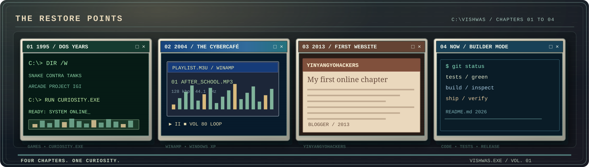

02 / SYSTEM RESTORE POINTS
HOW THE
STORY LOADED.
NOT A STRAIGHT LINE.
NOT A PERSONAL BRAND TEMPLATE.
JUST YEARS OF CURIOSITY.
NOT A PERSONAL BRAND TEMPLATE.
JUST YEARS OF CURIOSITY.
THE WALLPAPER
CHANGED.
THE KID DIDN'T.
The magic started long before GitHub: old desktops, floppy-disk icons, game CDs, WinRAR archives and a browser with too many tabs. That curiosity followed me into modern web engineering, defensive cybersecurity and automation.

1990s+
Windows. Everything was clickable.
Learned what things do by exploring the desktop. Mostly through curiosity, occasionally through spectacular trial and error.
2000s
After-school cybercafé energy.
Winamp, VLC, Daemon Tools, PowerISO, Internet Download Manager, Mario, Counter-Strike, Project I.G.I. and endless tinkering.
2013
The Blogger chapter.
YinYangYoHackers became my corner of the internet, before everything needed a polished pitch deck.
NOW
Build. Test. Understand. Repeat.
Thoughtful web interfaces, defensive security experiments, useful automation and more unusual creative ideas.